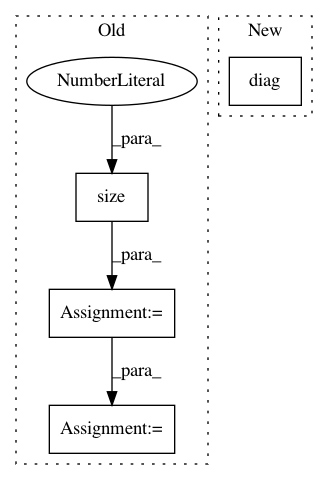

a7a12d157766b69cf4b1ddbb5fcdacfe485dc6fa,test/kernels/test_rbf_kernel.py,TestRBFKernel,test_ard,#TestRBFKernel#,17
Before Change
// Diag
res = kernel(a, b).diag()
actual = torch.cat([actual[i].diag().unsqueeze(0) for i in range(actual.size(0))])
self.assertLess(torch.norm(res - actual), 1e-5)
// batch_dims
actual = scaled_a.transpose(-1, -2).unsqueeze(-1) - scaled_b.transpose(-1, -2).unsqueeze(-2)
After Change
// Diag
res = kernel(a, b).diag()
actual = actual.diag()
self.assertLess(torch.norm(res - actual), 1e-5)
// batch_dims
actual = scaled_a.transpose(-1, -2).unsqueeze(-1) - scaled_b.transpose(-1, -2).unsqueeze(-2)
In pattern: SUPERPATTERN
Frequency: 3
Non-data size: 4
Instances
Project Name: cornellius-gp/gpytorch
Commit Name: a7a12d157766b69cf4b1ddbb5fcdacfe485dc6fa
Time: 2019-04-03
Author: gpleiss@gmail.com
File Name: test/kernels/test_rbf_kernel.py
Class Name: TestRBFKernel
Method Name: test_ard
Project Name: cornellius-gp/gpytorch
Commit Name: a7a12d157766b69cf4b1ddbb5fcdacfe485dc6fa
Time: 2019-04-03
Author: gpleiss@gmail.com
File Name: gpytorch/kernels/linear_kernel.py
Class Name: LinearKernel
Method Name: forward
Project Name: cornellius-gp/gpytorch
Commit Name: a7a12d157766b69cf4b1ddbb5fcdacfe485dc6fa
Time: 2019-04-03
Author: gpleiss@gmail.com
File Name: test/kernels/test_scale_kernel.py
Class Name: TestScaleKernel
Method Name: test_ard